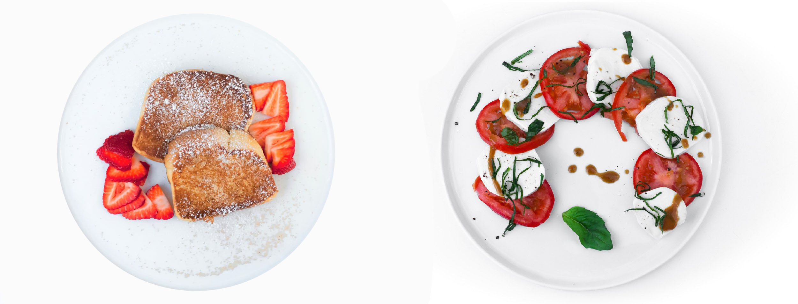

Our Teas
A woody palate derived from roasted spring Sencha stems; naturally decaffeinated (1-5mg).
From the Fujian Region of China, this Oolong is light, floral and superb, with a unique richness and beautiful bloom after each steep.
Dried apricot and a kiwi/papaya tingle on your tongue. Made from the stems of summer sencha leaves.
Award-winning, fresh + fragrant vanilla Earl Grey tea with beautiful blue corn flowers, bergamot oil, and ceylon.
Our whole leaf spearmint tea is perfectly minty and sweet without any bitter aftertaste; decaffeinated.
Dried fruit and a nuanced, vegetal finish. Uncloned, heirloom strains represent less than 3% of teas in Japan.
Our Food
Our homemade scone is served with whipped chantilly cream, butter, and organic fruit jam.
Our signature homemade chocolate cookie warmed with a toasted marshmallow.
Warmed to purr-fection with the perfect amount of butterscotch to sooth that sweet tooth.
Warmed, garnished with sea salt crystals. Purrrfect in every way.
Coconut-y, almond-y, and shaped like a cat’s paw. Meowvalous! Plus, it's gluten-free.
Cinnamon-nutmeg sugar, or matcha sugar.